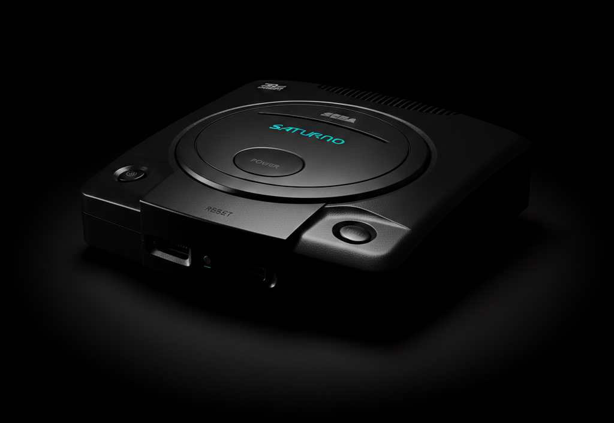

The 32-Bit Powerhouse
The Saturn launched in Japan (1994) to huge fanfare, but its North American debut became one of the most infamous "surprises" in gaming history, setting the stage for a hardware battle like no other.

Architecture & Legacy
The Surprise Launch
E3 1995
Sega announced the Saturn was "available now" months ahead of schedule. This move alienated retailers and developers, giving Sony's PlayStation a massive opening to take the lead.
The Peak
The King of 2D & Imports
The undisputed king of 2D fighting games like X-Men vs. Street Fighter. Sega's AM2 team also delivered arcade-perfect 3D hits like Virtua Fighter 2 and Sega Rally.
The Demise
Dual-CPU Complexity
Programming for the dual-CPU hardware was a nightmare for many. Combined with the lack of a mainline 3D Sonic game, the console struggled as the world shifted toward 3D polygons.
Pro Tip for Collectors
The Saturn is now one of the most expensive consoles to collect for! Legendary titles like Panzer Dragoon Saga can now sell for over $1,000 on the second-hand market.